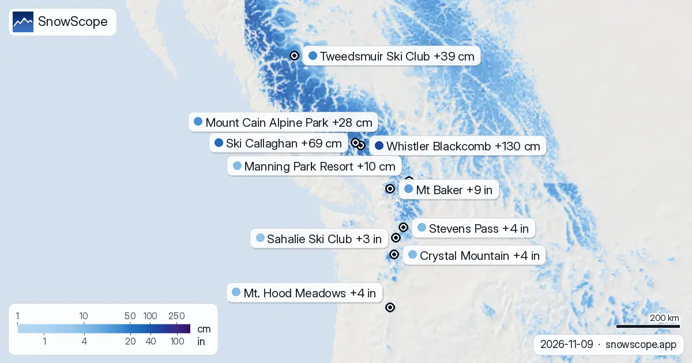

Whistler Blackcomb فالراس ديال توقعات التلج ديال 72 ساعة: +130 سم (9 نونبر)
الجدول اليومي ديالنا ديال المحطات اللي فيهم أكثر تلج جديد متوقع ف 24 ساعة الجاية وحتى ل 12 نونبر، فأوروبا والمغرب وأمريكا الشمالية، مع الحد ديال التلج.
شوف توقعات التلج مباشرة ديال Whistler Blackcomb فالتطبيق ديال SnowScopeالعلو ديال التلج، التنبيهات والخريطة 3D، فابور.
أوروبا والمغرب
Sainte-Anne la Condamine (فرنسا): 10 سم ف 24 ساعة الجاية و 51 سم ف 72 ساعة، الحد ديال التلج تقريبا 2800 م. Larche (فرنسا): 8 سم ف 24 ساعة الجاية و 48 سم ف 72 ساعة، الحد ديال التلج تقريبا 2900 م. Queyras (فرنسا): 6 سم ف 24 ساعة الجاية و 48 سم ف 72 ساعة، الحد ديال التلج تقريبا 2800 م.
| # | المحطة | المنطقة | +24 س | +72 س | الحد ديال التلج |
|---|---|---|---|---|---|
| 1 | Sainte-Anne la Condamine | جبال الألب · فرنسا | 10 سم | 51 سم | 2800 م |
| 2 | Larche | جبال الألب · فرنسا | 8 سم | 48 سم | 2900 م |
| 3 | Queyras | جبال الألب · فرنسا | 6 سم | 48 سم | 2800 م |
| 4 | Les Deux Alpes | جبال الألب · فرنسا | 9 سم | 47 سم | 2800 م |
| 5 | Queyras | جبال الألب · فرنسا | 9 سم | 47 سم | 2800 م |
| 6 | Isola 2000 | جبال الألب · فرنسا | 7 سم | 47 سم | 3000 م |
| 7 | La Grave | جبال الألب · فرنسا | 8 سم | 45 سم | 2900 م |
| 8 | Argentera | جبال الألب · إيطاليا | 7 سم | 45 سم | 3000 م |
| # | المحطة | المنطقة | +24 س | +72 س | الحد ديال التلج |
|---|---|---|---|---|---|
| 1 | Mt Baker | غرب ميريكان · ميريكان | 8 إنش (20 سم) | 9 إنش (24 سم) | 9200 قدم (2800 م) |
| 2 | Crystal Mountain | غرب ميريكان · ميريكان | 4 إنش (10 سم) | 4 إنش (10 سم) | 10500 قدم (3200 م) |
| 3 | Mt. Hood Meadows | غرب ميريكان · ميريكان | 4 إنش (10 سم) | 4 إنش (10 سم) | 11200 قدم (3400 م) |
| 4 | Stevens Pass | غرب ميريكان · ميريكان | 4 إنش (10 سم) | 4 إنش (10 سم) | 9800 قدم (3000 م) |
| 5 | Sahalie Ski Club | غرب ميريكان · ميريكان | 3 إنش (8 سم) | 3 إنش (8 سم) | 9500 قدم (2900 م) |
| 6 | Hurricane Ridge | غرب ميريكان · ميريكان | 3 إنش (7 سم) | 3 إنش (7 سم) | 10200 قدم (3100 م) |
| 7 | White Pass | غرب ميريكان · ميريكان | 2 إنش (5 سم) | 2 إنش (5 سم) | 10800 قدم (3300 م) |
| 8 | Ski Eldorado | شمال شرق ميريكان · كندا | 1 إنش (2 سم) | 2 إنش (5 سم) | 2000 قدم (600 م) |
| # | المحطة | المنطقة | +24 س | +72 س | الحد ديال التلج |
|---|---|---|---|---|---|
| 1 | Whistler Blackcomb | غرب كندا · كندا | 17 سم | 130 سم | 2500 م |
| 2 | Ski Callaghan | غرب كندا · كندا | 19 سم | 69 سم | 2400 م |
| 3 | Tweedsmuir Ski Club | غرب كندا · كندا | 4 سم | 39 سم | 2000 م |
| 4 | Mount Cain Alpine Park | غرب كندا · كندا | 11 سم | 28 سم | 2600 م |
| 5 | Manning Park Resort | غرب كندا · كندا | 6 سم | 10 سم | 2700 م |
| 6 | Whitewater | غرب كندا · كندا | 6 سم | 9 سم | 3300 م |
| 7 | Revelstoke | غرب كندا · كندا | 5 سم | 7 سم | 2900 م |
| 8 | Summit Lake Ski & Snowboard Area | غرب كندا · كندا | 5 سم | 7 سم | 3100 م |

ميريكان
Mt Baker (ميريكان): 8 إنش (20 سم) ف 24 ساعة الجاية و 9 إنش (24 سم) ف 72 ساعة، الحد ديال التلج تقريبا 9200 قدم (2800 م). Crystal Mountain (ميريكان): 4 إنش (10 سم) ف 24 ساعة الجاية و 4 إنش (10 سم) ف 72 ساعة، الحد ديال التلج تقريبا 10500 قدم (3200 م). Mt. Hood Meadows (ميريكان): 4 إنش (10 سم) ف 24 ساعة الجاية و 4 إنش (10 سم) ف 72 ساعة، الحد ديال التلج تقريبا 11200 قدم (3400 م).
كندا
Whistler Blackcomb (كندا): 17 سم ف 24 ساعة الجاية و 130 سم ف 72 ساعة، الحد ديال التلج تقريبا 2500 م. Ski Callaghan (كندا): 19 سم ف 24 ساعة الجاية و 69 سم ف 72 ساعة، الحد ديال التلج تقريبا 2400 م. Tweedsmuir Ski Club (كندا): 4 سم ف 24 ساعة الجاية و 39 سم ف 72 ساعة، الحد ديال التلج تقريبا 2000 م.
شنو جاي
الحد ديال التلج كيكون تقريبا 300 م تحت علو الجليد المتوقع: الفوق منو التلج الجديد يبقى طري؛ التحت منو توقع تلج مبلول ولا الشتا.
الأرقام ديال المحطات ديال التزلج تقديرات ديال الموديل للجهة الفوقانية؛ محطات القياس كتقيس فنقطة وحدة، فالتاريخ المكتوب.
التوقعات ديال شي أيام يمكن تتبدل: عاود شوف الخريطة نهار قبل ما تسافر.
نصايح للي كيتزلجو
- التلج الجديد كيكون مزيان فالساعات الأولى: سير بكري، قبل الشمس والناس.
- فين علو الجليد طالع فوق المحطة، توقع تلج مبلول وطلع للتيليسييج اللي فالفوق.
- قبل ما تخرج من البيست ولا دير جولة، قرا النشرة الرسمية ديال الانهيارات (الروابط لتحت).
- التلج فالخريطة ماكيعنيش بلي المحطة محلولة: شوف التيليسييج والتواريخ فالموقع ديال المحطة.
- فعّل تنبيه ديال التلج الطري فالتطبيق ديال SnowScope باش تعرف إمتى Whistler Blackcomb يجيها تلج جديد.
على هاد الأرقام
العلو ديال التلج فالمحطات هو أكثر تلج فالجهة الفوقانية حسب الموديل ديال التلج ديال SnowScope (تقريبا 1 كم، الحساب ديال 9 نونبر)؛ هادو تقديرات لمنطقة، ماشي قياس فنقطة وحدة. الأرقام ديال محطات القياس مقاسة فالتاريخ المكتوب. التوقعات يمكن تتبدل. ديما شوف النشرة الرسمية ديال الانهيارات قبل ما تخرج من البيست.
النشرات الرسمية ديال الانهيارات: EAWS (Europe) · avalanche.org (US) · Avalanche Canada
كيفاش تستاشهد بهاد المقال
للبحث، التعليم ولا الصحافة: الأرقام والرسومات تقدر تعاود تخدم بيهم بحرية تحت CC BY 4.0 مع هاد الاستشهاد.
SnowScope (2026), Whistler Blackcomb فالراس ديال توقعات التلج ديال 72 ساعة: +130 سم (9 نونبر), https://snowscope.app/blog/ar/2026/11/where-most-snow-falls-next-72-hours-9-november-2026.html, تشاف ف 2026-11-09
SnowScope (Atlas Labs). (2026, November 9). Whistler Blackcomb فالراس ديال توقعات التلج ديال 72 ساعة: +130 سم (9 نونبر). SnowScope snow reports. https://snowscope.app/blog/ar/2026/11/where-most-snow-falls-next-72-hours-9-november-2026.html
BibTeX
@misc{snowscope2026wheremostsnowfallsnext72,
author = {{SnowScope (Atlas Labs)}},
title = {Whistler Blackcomb فالراس ديال توقعات التلج ديال 72 ساعة: +130 سم (9 نونبر)},
year = {2026},
month = nov,
howpublished = {\url{https://snowscope.app/blog/ar/2026/11/where-most-snow-falls-next-72-hours-9-november-2026.html}},
note = {Published 2026-11-09 11:38 UTC; accessed 2026-11-09}
}· CC BY 4.0 · الطريقة، الداتا والأدوات →
Whistler Blackcomb: التلج والحرارة حسب العلو، هاد الشتا مقارنة مع اللي فاتت (الأدوات) →
تقارير أخرى ديال التلج

تزلج الفرق ديال العلو كامل ديال Revelstoke فراسك اللول: التلج فالقمة، فالوسط وفالتحت فالواد ف 46 شتوة اللي فاتو، وإمتى كل جزء كيكون فأحسن حالة.

شنو الصحيح على La Grave، الجبل ديال برا البيست تحت La Meije: الأرض، السلامة، التلج فكل شهر والاتجاه، من 46 شتوة اللي فاتت.

جمعنا العلو ديال التلج ديال اليوم، والتلج الجديد ديال 72 ساعة، والتوقعات باش نختارو Mount Cain Alpine Park, Whistler Blackcomb و Silver Star. من هاد …